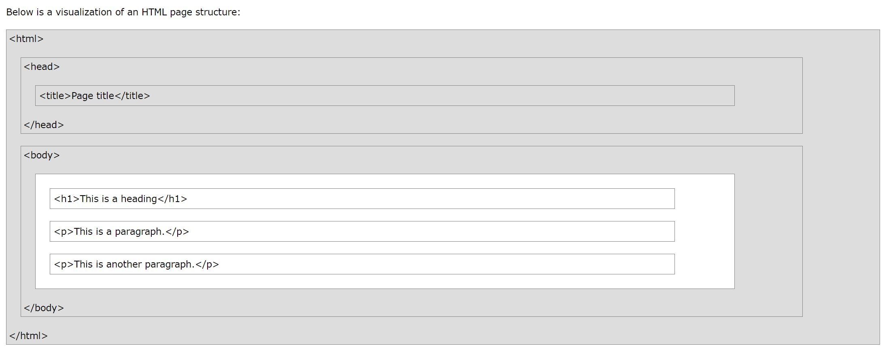
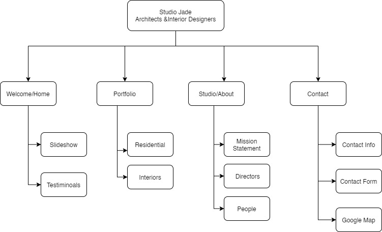

My Final Project Homework
Q1. Explain the difference between HTML, CSS and Javascript
- HTML , CSS and Javascript are the three layers of the modern web page construction.
- These three layers can be described as the 'Structure layer' (HTML), Presentation Layer (CSS) and Behavioral Layer (Javascript).
- In order to create an interactive web page, first the structure of the page needs to be addressed, followed by styling through CSS and then adding actions through Javascript.
HTML
HTML stands for Hypertext Markup Language. It is not a programing language. It creates the structure/framework of a web page. This means that it creates a system which identifies and describes various components of a page such as headings, paragraphs, lists, images, links etc. HTML uses a predefined list of tags to "markup" the document. Each set of item within angled brackets (< and >) is called a tag. A start tag along with some content and an end tag further makes an HTML element. A simple HTML document consists of a series of these elements.

Note: The above picture has been taken from w3schools.com.
CSS
CSS stands for 'Cascading Stylesheets'. It is used to make the web page visually appealing. This means that fonts, colors, line spacing, background colors/images, page layout etc. are all controlled by CSS which adds 'style' to the page. This refers to the way the document appears on the computer screen as well as a cell phone display, printed on paper etc. The style definitions are normally saved in external .css files.
CSS has its own syntax. A stylesheet is made up of one or more style instructions called rules/rule sets. Each rule selects an element and declares how it should look. The parts of a style sheet rule can be described as :
Selector { property: value; }
Here, the content within the paranthesis is called the 'declaration'.
Javascript
It is used to add 'interactivity' to the web pages. These include, checking form entries for valid entries, making the browser remember the account details of the user for the next time, altering the contents of the page, the style or behavior as per user response, etc.It is a client-side scripting language which means that it runs on the user's machine and not on the server. It is a dynamic programing language and does not need a compiler for interpretation. The browser reads the code the same way as we do and interprets it.
Just like CSS, a script can be embedded directly in a document or saved as a separate file and linked to the document. Both the methods use the 'script' element. A script is made up of a series of statements. A statement is a command that tells the browser what to do.
A simple statement can be: alert("How are you?");
This will make the browser display the alert "How are you?"
Q2. What are Single Page Apps (SPAs)? How do they differ from traditional multi-page Web Sites?
What are Single Page Apps (SPAs)? How do they differ from traditional multi-page Web Sites?
Single Page apps and Multi-page apps are both principal ways of building a website, SPAs being the more modern method. Both the SPAs and the MPAs have their own pros and cons and a choice between them depends on the type of the project, the business goals and which method may help in realizing those goals more effectively.
Single Page App
It is a JavaScript web app which interacts with the user by either retrieving all the code with a single page load or dynamically loading necessary resources as per the response to the user action and adding it to the existing page. It relies on client-side rendering instead of reloading at any point in the process or giving control to another page. Basically, it load logic in a browser itself rather than the server.Examples of SPA are Facebook, Google maps, Pinterest, Netflix and many more.
Some of the benefits of using Single Page Applications
- Engaging and unique user experience.Mobile-friendly with better user interactions with no need of clicking on endless links.
- Fast and Responsive Design. Dramatically improves the loading time:This is because they dont update the entire page, just the necessary content as per the user actions.
- SPAs are easier to debug.Since these apps are developed on frameworks like React developer tools etc. These tools have their own Chrome developer tools that make debugging easier.
- They are easier to develop and deploy
Multi-Page Websites or MPAs
These are more traditional web applications and is mostly very large out of necessity. Due to the large amount of content, they have many levels of depth with multiple links and UIs. Every time the content changes, MPAs require reloading of the page over and over again. This induces a demand for transferring large amount of data between the server and the browser.They are especially popular in E-commerce websites. Some examples of MPAs are Amazon, ebay etc.
Some of the benefits of using Single Page Applications
- Better performance in Search Engine Optimization
- Scalability on content because of no limit on number of pages.
- MPAs can provide better and valuable insights on website performance through the use of Analytics.
What is the difference between Web Designer, Front End Developer and Back End Developer?
A Website Designer envisions the look and feel of the website. A Front End Developer builds what we see on a website while a Back End Developer builds the infrastructure for it. The Front End Developers write code which runs on the user's browser while the Back End Developers write code which runs on the web server.
Web Designer
A web designer's job is to design the websites. The work range is pretty broad. Their responsibilities ranges from designing the mockups using tools like Photoshop, Figma etc. to code POCs using HTML, CSS and JavaScript.
Some of the skills required are:
- Creating engaging and responsive design
- Integrating client CMS programs and data feeds into websites
- Optimising sites for maximum speed and scalability
- Employing industry and design best practice through website build process
- Conducting website testing
- Working with marketing and research teams to incorporate brand elements and relevant market research findings into website
- Providing internal support and external customer service throughout the build and launch process of the website
Front End Developer
Front end Developers work on "Client side development. They create elements of the website which are directly viewable by the users. These may include visual as well as interactive features like layouts, buttons, navigation etc., basically anything which enhances user experience and gives a seamless navigation. They use primarily three coding languages: HTML, CSS and JavaScript. Some front-end developers may create the mockup designs too while others may code the websites after getting the mockups from web designers.
Some of the skills required are:
- Front End Programming Languages
- Knowledge of testing and debugging
- Creating responsive design which appears properly across different platforms as well as browsers.
- Understanding of front end development tools and features like automation, content management systems, version control systems, API and Frameworks
Back End Developer
Back End Developers address the server side web application logic and integrations. They monitor the functioning of the website work on updates to improve the behind-the scenes functionality. They typically require a strong knowledge of programming. They work on more advanced programming languages like Java, C++, Ruby, Python etc.
Some of the following skills required are:
- Database management
- Framework Utilization
- Knowledge of accessibility and security compliance
Distinguish the difference between Site Relative, Document Relative and Absolute Paths
These are the three different ways of creating paths used for linking
Absolute Path
An absolute path is the completPathe path which starts from the web root, irrespective of the current working directory. It is used for referencing external resources which are on a domain other than the home domain. Absolute paths contain the complete information required to find the resources indicated by an absolute url. For eg., C:\Documents\image.jpg
Document Relative Path
This method of linking can be used to link a document to another by specifying the path through a folder hierarchy from the current document to the document to be linked. They are used when defining the paths in case when the current document and the the document to be linked to are in the same folder and are likely to remain together. The portion of the path which they share is not specified and only the portion which differs is specified. In a scenario where we move the entire folder, all the files existing in it retain the same relative paths to each other. In case a specific file is moved that is linked to by a document-relative link, links would need to be updated. The advantage of linking through this method is portability and it speeds up the page load time.eg., images/image-01.jpg
Site Relative
The links are provided as paths relative to the root of the current domain. It is quite useful in Websites in which files need to be frequently moved from one folder to another. They are the easiest to use in Local Sites as they offer a lot of flexibility, will allow a tag to work in pages anywhere on the site without requiring editing path. They use a single forward slash at the beginning to signify the root directory.For eg., /images/image-01.jpg
Final Project Description
I started my assignment with the idea of designing a website for a small architectural company, 'Studio Jade Architects and Interior Designers' currently residing in New Delhi, India. This is one of my very close friend's company and we have been discussing about designing a website for it since quite some time.
However, to incorporate all the requirements for the course, I decided to make a website of a hypothetical company. I have come up with the contents myself and took the images from unsplash.
I have tried to broadly come up with the sections of the site.

What it means for a company to be Agile. What is the purpose of using Agile, and its Pros and Cons.
Agile and Waterfall are two different ways of delivering projects.
Agile is a set of principles and values which is related to product development. In an agile company, the deliverable is produced and accepted incrementally and in rapid cycles, around short iterations (usually 2-4 weeks). Also, in agile, the requirements are generally fully defined at the start of every iteration rather than at the start of the project in a single requirements phase (like in the waterfall method). The requirements will then be broken down into discrete items to be fully defined and developed with iterations. One key aim of the agile process is to maintaing the maximum flexibity possible in the whole development process.
Purpose of using Agile
- It gives team the opportunity to learn with each iteration
- Helps in prioritizing work and features effectively
- Process is fast and flexible which increases productivity
- Supports regular and collaborative troubleshooting
- Teams can make quick corrections as per the stakeholder feedback
- Involves feedback from the stakeholders and client at every step without holding the project up because feedaback is part of the process
- Teams can get quick feedback from each iteration
- Empowers team to work effectively and creatively
Advantages of Agile
- Continuous Visibility: Since the agile delivery is in discreet, tested steps, customer satisfaction is checked at every phase of the project span.
- Continuous (modular) testing:Agile testing is also done incrementally as each portion gets developed, so that the changes can be implemented rapidly over short-term steps.
- Rapid Delivery: It is possible to deliver functioning solutions in weeks using this methodology.
- Effective Short-term Planning: In case a problem originates in the implementation of a product feature, it can be planned as per part of the next sprint/iteration.
- Flexible Change Management: In agile development, changes happens in stages. Working in discrete steps means that rolling back a step can be done in a quicker and easier way.
Disadvantages of Agile
- Cultural Change:Agile requires high level of collaborations and a disciplined team which can stand in stark contrast with the traditional methods since this need may not always be very feasible.
- Lack of clarity can lead to problems:Agile depends on the clarity of purpose from the client. If the expected outcome is not clear, the project can go off-track.
- Advanced skills needed: Only senior programmers are capable of taking the kind of decisions involved in the agile development process leaving no place for new programmers unless they are combined with external resources.
- Insufficient Training:Agile is still a prescriptive model and training and experience is vital to project success.
Define the following roles: Project Manager, Business Analyst, Scrum Master, UX designer, Web Developer/Engineer, Quality Assurance Tester, and DevOps.
Project Manager
The project manager's role is wide ranging. The responsibilities include day-to-day management of the project and must be competent in managing the six aspects of a project, i.e. scope, schedule, finance, risk, quality and resources. They are involved in:
- Developing the big idea
- Organizing the project tasks
- Assembling the team
- Engaging the stakeholders
- Managing the money
- Leading the team
- Managing the handover
Business Analyst
Their role is to look at how a company operates and suggests methods to the company to improve their practices and processes. This is done with an aim to help the company make more money, solve their existing business problems and find ways ton achieve their goals in a better manner. The work of a business analyst is very closely related to the IT sector. A business analyst will typically do the following :
- Understand what the business does and how it does it by conducting research.
- Determine how to improve the existing business processes using data modelling techniques.
- Determine which tasks to automate
- Design the features of IT system (create functional specifications)
- Oversee the implementation of the new features of the IT system (technical design)
Scrum Master
Scrum is an agile development framework. Scrum is the framework while agile is a mindset. It is a set of meetings, tools and roles that works in sync to help teams structure and manage their work. A scrum team has three specific roles: product owner, scrum master and development team. The development team includes testers, designers, UX specialists, ops engineers apart from developers.
Scrum masters coach their teams , product owners, and the business on the scrum process, and looks for ways to fine-tune the practice of it. An effective scrum master can help their teams optimize transparency and delivery flow. As the facilitator-in-chief, he/she schedules the needed resources (both human and logistical) for sprint planning, stand-up, sprint review, and the sprint retrospective.
UX Designer
They are generalists who cover a little of everything in the entire design process. In large companies, a UX designer typically works with other designers like UX researchers and visual designers. In smaller companies, they may tend to handle all the design work. Their tasks include:
- Conducting user research, analyzing data and identifying pain points
- Creating user personas
- Ideating design options based on feasibility, desirability, viability and other criterias
- Determining the information architecture of a digital product
- Designing user flows and wire frames
- Creating prototypes
- Conducting usability and user testing
Web Developer/Engineer
A Web Developer is an IT professional responsible for the coding, design and layout of a functional and secure website according to a company's specifications.
Their job generally requires:
Knowledge of HTML,CSS, JavaScript and other relevant web design coding languages
- Creating and testing applications for websites
- Presenting design specifications
- Working with UI and other designers
- Troubleshooting website problems
- Monitoring website traffic
- Maintaining and updating websites
Quality Assurance Tester
The primary role of a quality assurance tester is in conducting software testing to resolve issues and ensure standards and guidelines are being adhered to. Their responsibilities include:
- Applying testing programs to new software
- Identifying bugs in new systems and understanding how to resolve them
- Generating reports describing defects and resolutions
- Ensuring that new software products are ready for consumer use
- Working with development teams to prevent issues with new products
DevOps
DevOps is a software development strategy which builds a gap between the developers and the IT staff.
A DevOps Engineer is someone who understands the Software Development Lifecycle and has an understanding of the various automation tools for developing digital pipelines. Some of their job description include:
- Knowledge of one cloud platform
- Good knowledge of Configuration Management and Deployment tools
- Proficient in scripting, and Git and Git workflows
- Experience in developing Continuous Delivering Pipelines
What is the difference between jpg, gif, png and SVG images?
JPEG/JPG
JPEG or JPG is an acronym for Joint Photographic Expert Groups. This is a very common image format. It takes up very little storage space, and is quick to upload or download.It is a 24-bit image format which means that JPEG can incorporate and display millions of colors - 16.8 million colors to be precise. It is very suitable to use this format in photographs and complex images. Basically any photo where color variances are important. JPGs should not be used if the image needs transparency, have text in them, is animated or would benefit from color changes (like logos or icons).
JPEG stores data in a lossy format which means that when data is compressed, unnecessary information gets deleted from the file permanently. That means that some quality will be lost or compromised when any file is converted to a JPG.
GIF
GIF stands for 'Graphics Interchange Format'. GIFs are 'lossless' which means that they retain all the data contained in a file. GIF files are limited to a maximum palette of 256 colors. Thus, not ideal for photographs or images with a lot of colors. GIF can however be used for graphics with a low pixel to pixel variation like logos, icons and flags. It is great for simple animations. Unlike JPEG, GIFs are 'lossless' which means that they support compression without any loss of data.GIF supports transparency. However the transparency is not selective.
PNG
PNG or Portable Network Graphics is an image format designed for the web. It takes the best part of JPEG and GIF. It supports transparency in browsers and is non-lossy that is images can be compressed without degrading the quality. PNG supports 8-bit color like GIF, but also supports 24-bit color RGB like JPEG. PNG comes in 2 formats: PNG-8 and PNG-24. The major difference between the two formats is the number of colors supported by each. PNG-8 can display a max of 256 colors while PNG-24 can display millions of colors. Use of PNG can be found in web graphics which requires transparency, color heavy photographs and images that require re-editing and re-exporting. It also supports embedded short texts. Search engines may find this useful to filter based on the content of the embedded texts.
SVG
SVG or Scalable Vector Graphics is a vector format. SVG is written in XML-based markup and is very different compared to the other formats. SVGs are very scalable. Unlike the other formats, SVGs are made of mathematically declared shapes and curves. Hence, there is no pixel limitation. SVGs can be modified using CSS and JavaScript and can also be animated. They are typically of smaller sizes. The size of the file depends on the complexity of the image and not on how large it is. SVG is thus best suited for logos, icons, charts, graphics etc. that consists of lines and shapes compared to JPEG and PNG. However for a more complex image like a photograph, this format might not be an ideal one.
What are testing environments? What is the difference between Local, Dev, QA and Production?
Testing environments
A testing environment is a space where you can test any change, update, fix bugs to validate the application before forwarding it into release. The test environment includes the software as well as hardware with the appropriate configuration settings
Local
During the development phase of a programming project, i.e., writing code and testing it, data scientists and software engineers often code on their local machine (computer). The machine is usually a laptop or desktop running a non-server operating system. The local environment is under the full control of the individual developer because :
- Its easy to quickly test, debug and update code.
- A developer can work without affecting the work of other developers.
Dev
Development Environment is the shared location for all the developers to check their code against all the changes of the release. This is known as integration testing. A common practice today is to automate the tests such that after the codes are updated to the repository and there are no errors building, the application automatically builds up and the integration tests automatically gets executed.
QA
Stable versions of the build are released to the QA environment for a rigorous functional, integration, regression and other types of testing. This environment can be further tested by splitting it into two different environments: QA and Pre-Production. The bulk of the application testing efforts occur in the QA environment, and the bugs logged refers to the issues found in this environment. It is an important step to make sure of the software release readiness.
Production
The Production environment is configured to host the latest released code and its enhanced functionality to the users. It is hosted on a live server and must work smoothly and without any issues in order to provide a pleasant end-user experience. While successive builds of the application are being tested in the QA and Dev environment, the app continues to run unaffected in production. This version preferably does not change except for during scheduled releases.
Function vs Form: When are web images considered part of the content (HTML) as opposed to part of the appearance (CSS)?
If an image has meaning, in terms of your content, you should use an HTML image. If an image is purely decoration, you should use CSS background images.
HTML
- Using the img tag is related to SEO - i.e. you can provide additional information about the image in the ALT attribute of the image tag, while there's no way to provide such information when specifying the image through CSS and in that case only the image file name may be indexed by search engines. The ALT attribute definitely gives the img tag SEO advantage over the CSS approach.
- IMG should be used if you intend to have people print your page and you want the image to be included by default.
- IMG with alt text should be used when the image has an important semantic meaning, such as a warning icon. This ensures that the meaning of the image can be communicated in all user-agents, including screen readers.
- IMG plus alt attribute should be used if the image is part of content such as a logo or diagram.
- IMG should be used if you rely on browser scaling to render an image in proportion to text size.
CSS
- Background images can be used if the image is part of the overall-design and is repeated on multiple pages. Preferably in background sprite form for optimization.
- Can be used when the images are purely used to design and has no relation to the content
- Background-images can be used when doing image-replacement of text eg. paragraphs/headers.
- Background-image should be used if you need to have people print your page and do not want the image to be included by default.
What is considered the right size for an image or video asset?
Lowering file sizes while maintaining acceptable quality is the primary goal of optimizing images for website performance. Smaller files lead to faster page loads and improved user-experience & SEO.For optimal website performance, images should be as large as needed to fill their “containers”, based on your page layout. It is crucial to determine image dimensions first, to know how wide your content area is on your site.
Slideshows
For full-width slideshows (that automatically stretch to the full size of the browser), 2560 pixels in width is recommended, which is the standard resolution width for 27″ and 30″ monitors.
Images can have any height you need, to create an aspect ratio.This is not a scenario where we need to double the image dimensions for retina screens, because that would create huge 5000px images (unlike what we need to do in the case of static images and thumbnails).
For smaller slideshows that don’t take up the entire width of the page, but maybe just a percentage of it, the required image size maybe adjusted accordingly (maybe 2000px, or 1800px, etc.)
For static images used in page layouts and thumbnails
Static images should be sized depending on the width of that column or content area. For e.g. if an image needs to get displayed at 260×174 pixels in width based on the page layout, you’d upload images at twice that size: i.e. 520×348 pixels.
What is the difference between ID's, Classes and Tags? How does Specificity play a role in the selection of HTML elements (both in CSS and JS)
HTML id Attribute:
The id attribute is a unique identifier which is used to specify the document. It is used by CSS and JavaScript to perform a certain task for a unique element. In CSS, the id attribute is written using # symbol followed by id.
HTML class Attribute:
The class name can be used by CSS and JavaScript on any HTML elements to perform certain tasks with the specified class name.Class selectors are defined using a period, followed by the value of the class that you want to apply a set of styles to.
HTML Tags
An HTML tag is a special word or letter surrounded by angle brackets, < and >. HTML tags are the hidden keywords within a web page that define how your web browser must format and display the content. Most tags must have two parts, an opening and a closing part.
IDs versus Classes
- The difference between an ID and a class is that an ID can be used to identify one element, whereas a class can be used to identify more than one.
- Classes have no special abilities in the browser unlike the IDs. IDs are special since you can use a special URL to link directly to an element and it’s used by JavaScript.Classes, on the other hand, can reflect multiple elements on a web page.
- IDs are commonly used in that programming language. The function getElementById allows you to select an element on a web page. It relies on the fact that only one element can share the same ID unlike the classes.
Specifity
If there are two or more conflicting CSS rules that point to the same element, the browser follows some rules to determine which one is most specific and therefore wins out.
- When multiple declarations have equal specificity, the last declaration found in the CSS is applied to the element. Specificity only applies when the same element is targeted by multiple declarations.
- As per CSS rules, directly targeted elements will always take precedence over rules which an element inherits from its ancestor.
- The universal selector (*) has low specificity, while ID selectors are highly specific
- Contextual selectors are more specific than a single element selector The embedded style sheet is closer to the element to be styled.
- Class selector beats any number of element selectors - a class selector such as .intro beats h1, p, div, etc:
- The universal selector and inherited values have a specificity of 0 - *, body * and similar have a zero specificity. Inherited values also have a specificity of 0.
Calculating Specificity

Note: Image has been taken from css-tricks.com
- If the element has inline styling, that automatically1 wins (1,0,0,0 points)
- For each ID value, apply 0,1,0,0 points
- For each class value (or pseudo-class or attribute selector), apply 0,0,1,0 points
- For each element reference, apply 0,0,0,1 point
Why is Web Accessibility important?
- The most obvious benefit of web accessibility is that it helps people with disabilities enjoy the website’s content, products, and services.
- Legal compliance for e.g. ADA or the Americans with Disabilities Act requires people with disabilities to share equal access to public services and public places like restaurants, theatres etc. While ADA does not explicitly talks about accessibility in websites, their legislation is broad enough to be interpreted in the digital world as well.
- Acquiring new customer group. As the needs of users with disabilities are often ignored by most brands, users with disabilities are willing to spend more of their money with companies who provide them with a well-thought-out user experience. The purchasing power of this particular market is enormous as per study.
- To build a positive brand image of your organization. In today's time everyone has become more conscious and want to support companies that share a similar beliefs , ideals and values.
- Creating an accessible website can also make your site more likely to be found by improving search engine optimization (SEO). While the exact details of how pages are ranked in Google are never fully-revealed, there are some SEO best practices that nearly all digital marketers can agree on.
- Increased usability.The goal of accessibility is to make products, services, and environments more usable by people with disabilities. In this light, accessibility can be seen as an overlapping concept of usability, which aims to improve a product or service’s ease of use and user experience.For example, alternative text for images and objects on your website can help people with slow internet connections understand the purpose of the content before it loads.
- Websites that are created with accessibility in mind tend to have a higher-quality code base.Writing cleaner code has a variety of benefits for your website, including better user interfaces, fewer bugs, and faster loading times (which will also improve your SEO ranking as a result).
What is a CSS Preprocessor? What are some examples? In React, what are styled components? How do Styled Components violate separation of concerns?
A CSS preprocessor is a program that lets you generate CSS from the preprocessor's own unique syntax. Preprocessors can make CSS code more organized. With the power that comes from using variables and functions, lines can be shaved off CSS code and that means more readable code. Thus, maintaining code will also be easier and in the long run it will be easier to edit.There are many CSS preprocessors to choose from, however most CSS preprocessors will add some features that don't exist in pure CSS, such as mixin, nesting selector, inheritance selector, and so on.
Examples of CSS Preprocessor
- Sass
One of the most well known CSS preprocessor out there, Sass has been around for nearly eight years.Sass requires Ruby to work with, and offers two syntaxes: the original Sass, and SCSS which is relatively new but steadily rising in popularity,.
- Less
Less is another popular CSS preprocessor. It is pretty easy to set up, as you just got to reference its JavaScript file in your HTML document.
Owing to its simplicity and reductionist approach, Less has attracted a very strong and loyal user base.
- CSS-Crush
CSS-Crush ranks way behind Less and Sass in terms of popularity, but that it does come with its many positive attributes . It comes loaded with everything you might ask for: variables, inheritance, nested rules, etc.
- Myth
Myth lets you implement future CSS syntax without having to worry about browser support or specification status. So when the given syntax does become available in browsers, you have zero need to rewrite your code.Myth is based on Node.JS
Styled Components in React
Styled-components is a library for React and React Native that allows you to use component-level styles in your application that are written with a mixture of JavaScript and CSS using a technique called CSS-in-JS. Styled-components allows React developers to write plain CSS in React components without having to worry about clashing of class names.
To build an app the “React Way,” is to break a design up into components — pieces of UI that are responsible for just one thing. When using "Plain Stylesheets", the thinking here is that there are already too many CSS architecture solutions out there — so there’s no need to do styling in React any differently. However, when using CSS in JS, the thinking is that the building apps in React is enough of a paradigm shift to justify a similar shift in the way we approach styling. Instead, fully couple the components with the styling by actually writing the styles in Javascript.
React components encapsulate both presentation (HTML/CSS) and behavior (JavaScript). It does potentially violate separation of responsibilities, because JavaScript is written by devs, and HTML is often written by designers. Putting them together limits the ability of designers to modify the HTML.
What is the difference between Web Hosts, Domains, and FTP?
Web Hosts
Web hosting is the process of renting or buying space to house a website on the World Wide Web. Website content such as HTML, CSS, and images has to be housed on a server /web host to be viewable online.Your site lives as a database and files that gets uploaded to your hosting server.You pay a bill annually or monthly for this service through a hosting provider.
Domains
A domain is the name of your website and it’s made of 2 things: a name (whatever you want) and a top level domain(like .com, .org etc.).The domain names are managed by Internet Corporation for Assigned Names and Numbers (ICANN) It is a non-profit organization that creates and implements the policies for domain names.ICANN gives permission to companies called Domain Name Registrars for selling domain names. These domain registrars are allowed to make changes to domain names registry on your behalf.Domain name registrars can sell domain names, manage its records, renewals, and transfers to other registrars. There are several types of domain extensions (.com being the most popular one.) which includes:
- Top Level Domain
Top level domain or TLD are generic domain extensions that are listed at the highest level in the domain name system.
- Country Code Top Level Domain – ccTLD
Country code top-level domain or ccTLD are country specific domain names which end with country code extension like .uk for the United Kingdom.
- Sponsored Top Level Domain – sTLD
Sponsored top-level domain or sTLD is a category of TLDs that has a sponsor representing a specific community served by the domain extension. For example, .edu for education-related organizations.
FTP
FTP or File Transfer Protocol is the most common way to access and transfer files between computers, though there are other methods. FTP has built in access control to prevent unauthorized persons from adding, removing or transferring files. A more secure, encrypted transfer is referred to as SFTP, but the principles of both FTP and SFTP are the same. FTP has less to do with how your website renders and appears, but with how to update and change your website. Sometimes FTP is locked down heavily so only certain IPs can access it in combination with the proper FTP credentials (login).
What is a Package Manager (e.g. NPM, Composer)? How does it play a role in software development?
A package manager is a programming language’s tool to create project environments and easily import external dependencies. You don’t have to reinvent the wheel and are able to make the most of the tools at your disposal. When working on a project or library, you may “package” your project and publish it for others.
You can usually specify dependencies, a package name, author, tags/keywords and version number. All this helps online repositories store your package and allows others to find your project. Furthermore by allowing you to create your own packages, developers are challenged to think about how their package will be used and implemented, in turn producing better and more reusable packages.